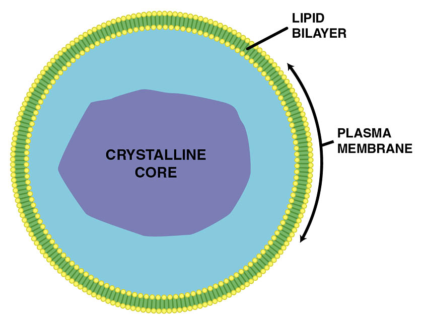

Els peroxisomes Són uns orgànuls la funció dels quals és el metabolisme lipídic i l’equilibri redox. En aquests es realitza el trencament d’àcids grassos mediat per la beta-oxidació. Contenen els enzims catalasa i peroxidasa. Síntesi de mielina Acumulació de calci en cardiomiòcits. Detoxificació cel.lular Orgànuls amb els que es relacionen: mitocòndries, gotes de lípids i reticleendoplasmàtic llis.  https://commons.wikimedia.org/wiki/File:Peroxisome.jpg
Els peroxisomes Llegeix i completa Els peroxisomes són orgànuls cel·lulars delimitats per una Buits (1): mitocòndriescatalasesplasmalògensreticle endoplasmàticplasticitatmembranaoxidacióSíndrome de ZellwegerOxidacióDetoxificacióeucariotescatalasaperòxid d’hidrogenperoxisomesAdrenoleucodistròfiaoxidatius JXUwMDM1JXUwMDA4JXUwMDA4JXUwMDBmJXUwMDEwJXUwMDEzJXUwMDBmJXUwMDBm , presents en gairebé totes les cèl·lules Buits (2): mitocòndriescatalasesplasmalògensreticle endoplasmàticplasticitatmembranaoxidacióSíndrome de ZellwegerOxidacióDetoxificacióeucariotescatalasaperòxid d’hidrogenperoxisomesAdrenoleucodistròfiaoxidatius JXUwMDNkJXUwMDEwJXUwMDE2JXUwMDAyJXUwMDEzJXUwMDFiJXUwMDA2JXUwMDFiJXUwMDExJXUwMDE2 . El seu nom prové del fet que participen en reaccions que generen i utilitzen Buits (3): mitocòndriescatalasesplasmalògensreticle endoplasmàticplasticitatmembranaoxidacióSíndrome de ZellwegerOxidacióDetoxificacióeucariotescatalasaperòxid d’hidrogenperoxisomesAdrenoleucodistròfiaoxidatius JXUwMDI4JXUwMDE1JXUwMDE3JXUwMDgwJXUwMDhhJXUwMDExJXUwMDBkJXUwMDQ0JXUwMDQ0JXUyMDdkJXUyMDcxJXUwMDAxJXUwMDBkJXUwMDE2JXUwMDFkJXUwMDA4JXUwMDAyJXUwMDBi (H₂O₂). Característiques principals Estructura senzilla: són vesícules petites envoltades per una sola membrana. Enzims Buits (4): mitocòndriescatalasesplasmalògensreticle endoplasmàticplasticitatmembranaoxidacióSíndrome de ZellwegerOxidacióDetoxificacióeucariotescatalasaperòxid d’hidrogenperoxisomesAdrenoleucodistròfiaoxidatius JXUwMDM3JXUwMDE3JXUwMDExJXUwMDBkJXUwMDA1JXUwMDE1JXUwMDFkJXUwMDFjJXUwMDA2 : contenen diverses oxidases i Buits (5): mitocòndriescatalasesplasmalògensreticle endoplasmàticplasticitatmembranaoxidacióSíndrome de ZellwegerOxidacióDetoxificacióeucariotescatalasaperòxid d’hidrogenperoxisomesAdrenoleucodistròfiaoxidatius JXUwMDNiJXUwMDAyJXUwMDE1JXUwMDE1JXUwMDBkJXUwMDBkJXUwMDEyJXUwMDE2JXUwMDE2 , que permeten dur a terme reaccions d’ Buits (6): mitocòndriescatalasesplasmalògensreticle endoplasmàticplasticitatmembranaoxidacióSíndrome de ZellwegerOxidacióDetoxificacióeucariotescatalasaperòxid d’hidrogenperoxisomesAdrenoleucodistròfiaoxidatius JXUwMDM3JXUwMDE3JXUwMDExJXUwMDBkJXUwMDA1JXUwMDAyJXUwMDBhJXUwMDlh i desintoxicació. Gran Buits (7): mitocòndriescatalasesplasmalògensreticle endoplasmàticplasticitatmembranaoxidacióSíndrome de ZellwegerOxidacióDetoxificacióeucariotescatalasaperòxid d’hidrogenperoxisomesAdrenoleucodistròfiaoxidatius JXUwMDI4JXUwMDFjJXUwMDBkJXUwMDEyJXUwMDA3JXUwMDFkJXUwMDBhJXUwMDBhJXUwMDFkJXUwMDE1JXUwMDE1 : poden formar-se de novo a partir del Buits (8): mitocòndriescatalasesplasmalògensreticle endoplasmàticplasticitatmembranaoxidacióSíndrome de ZellwegerOxidacióDetoxificacióeucariotescatalasaperòxid d’hidrogenperoxisomesAdrenoleucodistròfiaoxidatius JXUwMDJhJXUwMDE3JXUwMDExJXUwMDFkJXUwMDBhJXUwMDBmJXUwMDA5JXUwMDQ1JXUwMDQ1JXUwMDBiJXUwMDBhJXUwMDBiJXUwMDFmJXUwMDFjJXUwMDBkJXUwMDEyJXUwMDFlJXUwMDhkJXUwMDk0JXUwMDFkJXUwMDBh o créixer i dividir-se a partir de Buits (9): mitocòndriescatalasesplasmalògensreticle endoplasmàticplasticitatmembranaoxidacióSíndrome de ZellwegerOxidacióDetoxificacióeucariotescatalasaperòxid d’hidrogenperoxisomesAdrenoleucodistròfiaoxidatius JXUwMDI4JXUwMDE1JXUwMDE3JXUwMDFkJXUwMDE3JXUwMDExJXUwMDFhJXUwMDFjJXUwMDAyJXUwMDA4JXUwMDE2 preexistents. Funcions Els peroxisomes tenen un paper essencial en nombrosos processos metabòlics: Buits (10): mitocòndriescatalasesplasmalògensreticle endoplasmàticplasticitatmembranaoxidacióSíndrome de ZellwegerOxidacióDetoxificacióeucariotescatalasaperòxid d’hidrogenperoxisomesAdrenoleucodistròfiaoxidatius JXUwMDE3JXUwMDM3JXUwMDExJXUwMDBkJXUwMDA1JXUwMDAyJXUwMDBhJXUwMDlh d’àcids grassos de cadena molt llarga, que no poden ser degradats inicialment a les Buits (11): mitocòndriescatalasesplasmalògensreticle endoplasmàticplasticitatmembranaoxidacióSíndrome de ZellwegerOxidacióDetoxificacióeucariotescatalasaperòxid d’hidrogenperoxisomesAdrenoleucodistròfiaoxidatius JXUwMDM1JXUwMDA0JXUwMDFkJXUwMDFiJXUwMDBjJXUwMDkxJXUwMDljJXUwMDBhJXUwMDE2JXUwMDFiJXUwMDBjJXUwMDE2 . Buits (12): mitocòndriescatalasesplasmalògensreticle endoplasmàticplasticitatmembranaoxidacióSíndrome de ZellwegerOxidacióDetoxificacióeucariotescatalasaperòxid d’hidrogenperoxisomesAdrenoleucodistròfiaoxidatius JXUwMDFjJXUwMDIxJXUwMDExJXUwMDFiJXUwMDE3JXUwMDExJXUwMDBmJXUwMDBmJXUwMDBhJXUwMDAyJXUwMDAyJXUwMDBhJXUwMDlh de substàncies tòxiques mitjançant l’eliminació de peròxid d’hidrogen (H₂O₂) gràcies a l’enzim Buits (13): mitocòndriescatalasesplasmalògensreticle endoplasmàticplasticitatmembranaoxidacióSíndrome de ZellwegerOxidacióDetoxificacióeucariotescatalasaperòxid d’hidrogenperoxisomesAdrenoleucodistròfiaoxidatius JXUwMDNiJXUwMDAyJXUwMDE1JXUwMDE1JXUwMDBkJXUwMDBkJXUwMDEyJXUwMDEy . Metabolisme del glioxilat i del glutatió. Síntesi de Buits (14): mitocòndriescatalasesplasmalògensreticle endoplasmàticplasticitatmembranaoxidacióSíndrome de ZellwegerOxidacióDetoxificacióeucariotescatalasaperòxid d’hidrogenperoxisomesAdrenoleucodistròfiaoxidatius JXUwMDI4JXUwMDFjJXUwMDBkJXUwMDEyJXUwMDFlJXUwMDBjJXUwMDBkJXUwMDllJXUwMDk1JXUwMDAyJXUwMDBiJXUwMDFk , fosfolípids essencials per a la mielina del sistema nerviós. Importància biomèdica Les alteracions en els peroxisomes poden donar lloc a malalties peroxisomals, sovint greus i hereditàries: Buits (15): mitocòndriescatalasesplasmalògensreticle endoplasmàticplasticitatmembranaoxidacióSíndrome de ZellwegerOxidacióDetoxificacióeucariotescatalasaperòxid d’hidrogenperoxisomesAdrenoleucodistròfiaoxidatius JXUwMDBiJXUwMGJlJXUwMDgzJXUwMDBhJXUwMDE2JXUwMDFkJXUwMDAyJXUwMDA4JXUwMDQ1JXUwMDQ0JXUwMDAxJXUwMDQ1JXUwMDdhJXUwMDNmJXUwMDA5JXUwMDAwJXUwMDFiJXUwMDEyJXUwMDAyJXUwMDAyJXUwMDE3 : defecte en la biogènesi dels peroxisomes, que afecta greument el desenvolupament neurològic i hepàtic. Buits (16): mitocòndriescatalasesplasmalògensreticle endoplasmàticplasticitatmembranaoxidacióSíndrome de ZellwegerOxidacióDetoxificacióeucariotescatalasaperòxid d’hidrogenperoxisomesAdrenoleucodistròfiaoxidatius JXUwMDE5JXUwMDI1JXUwMDE2JXUwMDE3JXUwMDBiJXUwMDAxJXUwMDAzJXUwMDA5JXUwMDEwJXUwMDE2JXUwMDBjJXUwMDBiJXUwMDBkJXUwMDFhJXUwMDA3JXUwMDA2JXUwMDgwJXUwMDk0JXUwMDBmJXUwMDA4 : acumulació d’àcids grassos de cadena molt llarga per defectes en la seva degradació, que afecta la mielina i les glàndules suprarenals. Habilita el javascript